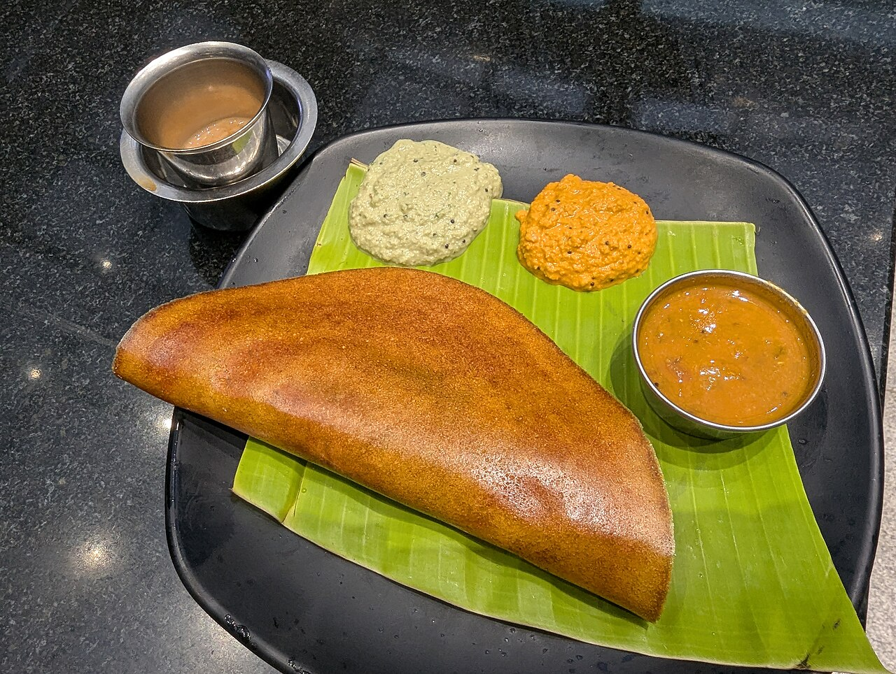

Dosa
Home

Description
Dosa is a popular South Indian dish made from a fermented batter of rice and lentils. It is typically served with chutney or sambar.
- 3 cups Dosa rice or parboiled rice
- 1 cup Whole white urad dal (black gram without skin)
- 1/2 teaspoon Fenugreek seeds (methi)
- 2 tablespoons Poha (flattened rice, optional for crispiness)
- Water (for soaking and grinding)
- Salt to taste
- Oil or ghee for cooking the dosas
Steps
- Rinse the rice and urad dal separately. Soak the rice in water, and soak the urad dal along with fenugreek seeds in a separate bowl for 4 to 5 hours.
- Drain the urad dal and grind it with cold water into a smooth, fluffy paste. Transfer to a large mixing bowl.
- Grind the rice with soaked poha into a slightly coarse batter, adding water in small increments.
- Combine both batters together with your hands, add salt, and mix thoroughly.
- Cover the bowl and keep it in a warm place to ferment for 8 to 12 hours until the batter rises and turns bubbly.
- Heat a flat non-stick or cast-iron tawa on medium heat. Sprinkle a few drops of water to test the heat and wipe it clean with a kitchen towel.
- Pour a ladleful of batter into the center and quickly spread it in a circular spiral motion outwards to make a thin crepe.
- Drizzle a teaspoon of oil or ghee around the edges and cook on medium flame until the base turns golden and crisp.
- Fold the dosa and remove it from the tawa. Serve immediately with hot sambar and coconut chutney.